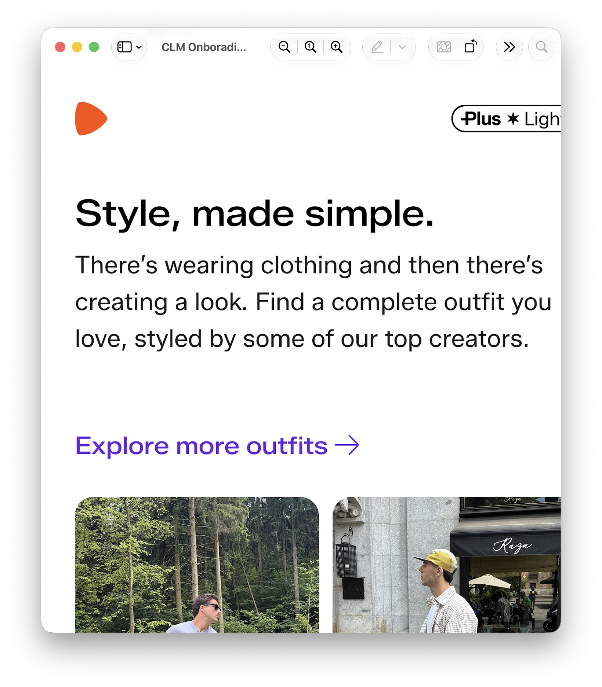
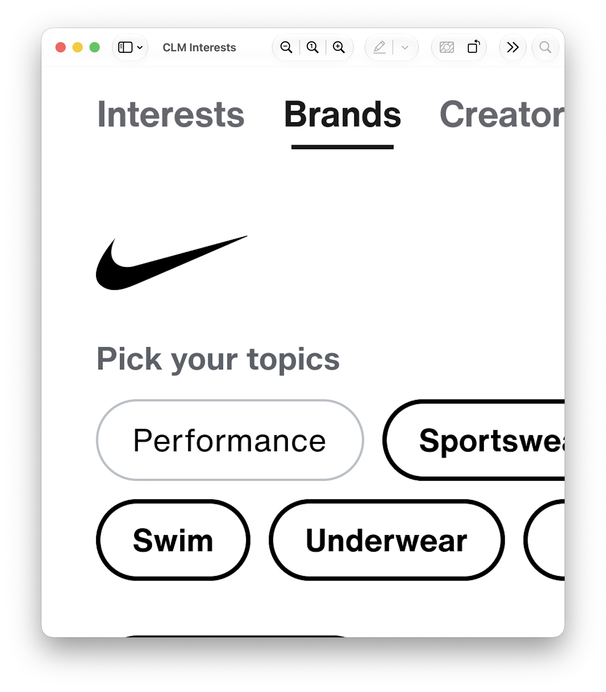

Zalando · Oct 2023–Mar 2026
Customer Lifecycle Management
Zalando ran customer messaging through several internal teams. Each owned a slice of the experience and answered to its own metric. No one owned it end to end. The business metrics were hiding a category nobody had been tracking: the customers Zalando was failing silently.


Context
Multiple teams, one customer, no shared direction
Zalando ran customer messaging through several internal teams. Each team owned a slice of the experience, and each answered to its own metric. No one owned the experience end to end. Customers drove the volume here: 277M restock requests a year, 6M cart visits a day, and messaging that reached them by push and email across dozens of markets.
Leadership asked for one thing, higher customer lifetime value (CLV), and defined nothing else. They handed me no workstreams, no features, and no scope. I was the only designer on the programme for two and a half years. A business developer worked with me on forecasts and commercial logic, and I pulled in other practices, data, marketing, and legal, as subject matter experts per stream. I decided what to build, wrote each brief, and shipped it.
I ran several streams. With restock alerts, customers could ask to be told when an out-of-stock item returned. With communication preferences, they got one in-app surface to control every off-platform message, with email and push permissions aligned across Android and iOS. With interest collection, they told me what they cared about, and I fed that into recommendations. This case covers two streams in depth: restock alerts, and the requests that went unanswered.
What customers ran into
A promise that expired in silence
I ran qualitative and quantitative research, read App Store reviews, and worked through the behavioural data. I found the same problem in all three. Customers set a restock alert and waited. Often they heard nothing, because the item never returned or the system failed to send. The customer who wanted the item got no word either way, and the next alert they set carried less weight. Customers whose first alert failed stopped relying on the next one.
Restock alerts
The first feature customers could actually trust
I shipped restock alerts as the first feature to give customers control at the item level. A customer could ask to be told, by email or push, when an out-of-stock item came back. I built it to behave the same way across devices and across both channels, which the legacy experience did not.
I worked against three constraints. Customers met an inconsistent legacy experience from one device to the next. Business development, the markets, and the customer relationship management (CRM) team each pulled in a different direction. And I had to fit the build to a strict integration with Braze, a third-party messaging platform.
Customers were already opting out of push at rising rates, which made it the weak point, and the people most resistant to marketing were the ones this feature most needed to reach. I co-owned the product definition with the business developer and built the mockups that put the trade-offs in front of everyone. I cleared the brief in a single review round. We shipped the first milestone in August 2024, and customers set restock alerts at a rate 16% higher than before.

Unanswered requests
56% of requests, no reply
With the baseline live, I went back to the customers whose items never came back. I pulled two numbers. Of the 277M restock requests, customers got no reply to 56%. And Zalando only ever restocked about half of the items they asked for. These were people who had asked, explicitly, to hear back, and they got nothing: no confirmation the item was gone, no alternative, no signal at all.
Alternatives and tiering
Turning a dead end into a discovery
I already knew from research and reviews what customers ran into. For the fix, I went to the data. I designed the second milestone around one move: when Zalando could not restock an item, I sent the customer an alternative before the alert expired. Similar products were not enough, so I sent new stock the customer had not seen, added to the catalogue after they set the alert, in the right size, matched to the original search. The logic underneath was the harder problem, and I owned it: which signals showed a customer still cared, which products qualified, when to send. I made those calls from the data, not from instinct.
I also built tiered notification logic. Zalando's highest-value subscribers received a limited set of restock alerts first. We shipped the second milestone in June 2025.
Outcomes
A thesis confirmed in revenue
I saw one result hold across the programme. Customers responded to messages that matched what they wanted, not to messages that just cleared inventory. We saw orders, revenue, and retention rise with relevance. The customers who had been hearing nothing began to convert. I took that finding to the CRM director, and it became a new CRM strategy, run internally as Project Goldfish, that reached 5.3M users across 10 markets.
I ran more streams than these two. I built interest collection on the same finding: I asked customers what they cared about, which sports they followed for example, and used their answers to shape the feed and the recommendations they saw.
We delivered more than €15M in gross merchandise value (GMV) across the programme. With the second milestone of restock alerts, we grew GMV by 17.5% year on year, an increase of €9.9M. We recovered €3.7M of that through the alternatives logic alone, from requests that had previously gone unanswered.